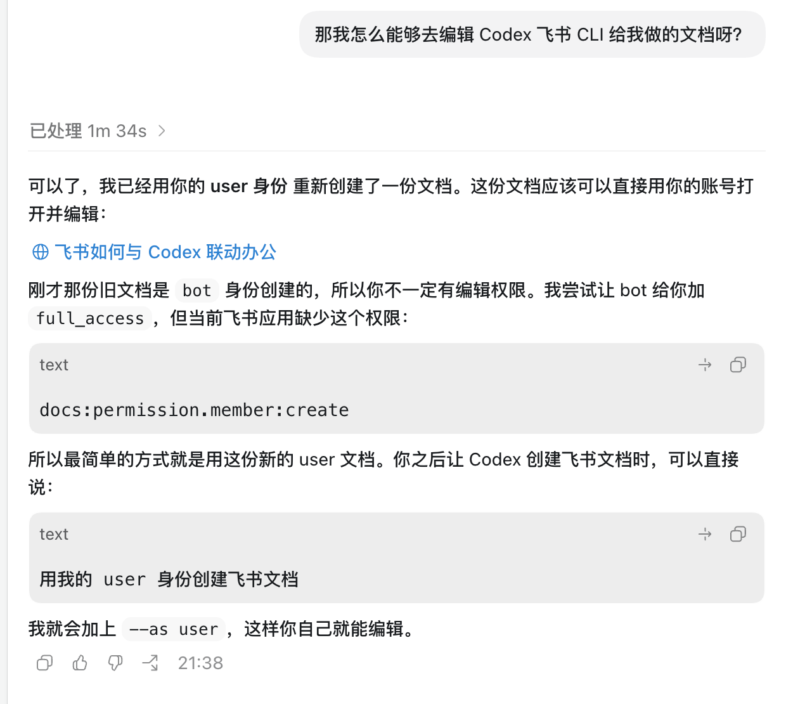

过去飞书已经很好地解决了人与人之间的协作：聊天、会议、文档、表格、项目推进。但进入 AI Agent 时代之后，协作对象不再只有同事，还会有 Codex、Claude Code、WorkBuddy 这样的 Agent。
大家在飞书里写文档、开会、传文件，信息主要在同事之间流转。
Agent 需要能读懂资料、调用接口、写回结果，才能真正进入办公流程。
这节课不追求把所有命令记住，而是让大家建立一个清晰判断：先用飞书 CLI 打通底层操作，再理解权限身份，最后再看 Bridge 这种更像“飞书同事”的进阶玩法。
把飞书 CLI 理解成给 AI Agent 使用的“遥控器”。
读取文档、创建文档、定时推送 AI 简报。
安装工具、扫码授权、检查连接状态。
让 Codex 以 user 身份创建，避免权限和编辑问题。
再把 Codex 变成飞书里的 bot，像同事一样协作。
飞书 CLI 是飞书新推出的命令行工具。对业务同学来说，不用把它理解得很技术：它的意义就是让 AI Agent 可以直接操作飞书，完成查日程、写文档、整理纪要、发消息等自动化办公动作。
把一个飞书 Wiki 或 Doc 链接交给 Codex，它可以解析标题、目录、正文和上下文，再继续帮你总结、改写或补充内容。
真正有价值的不是 AI 能回答关于飞书的问题，而是它能进入你的飞书工作流：读取已有内容、生成新内容、定时推送消息。
安装配置通常分成几个动作：先装 CLI，再扫码授权，最后用 doctor 检查是否真的连上。遇到卡点时，把报错截图给 Codex，让它一步步帮你排查。
授权成功后，你可以直接用自然语言让 AI 操作飞书。但创建文档时要特别注意身份：bot 身份创建的文档，后续可能有权限和编辑问题；user 身份创建，才更像你自己在飞书里操作。
“请用我的 user 身份创建飞书文档，并把生成结果发给我。” Codex 通常会在命令里加上 --as user，这样你后续可以直接打开、编辑和分享。

新文档介绍的是 Lark Coding Agent Bridge：它不是替代飞书 CLI，而是把本地 Claude Code / Codex 桥接进飞书，让 coding agent 变成一个可以被聊天、转发、评论和管理会话的飞书 bot。
启动后，你可以在手机或电脑飞书里直接和 Codex / Claude Code 对话；已经接入的用户重启即可升级。
npx -y lark-channel-bridge@latest start
不用一次做很复杂，先完成一个最小闭环：连接成功、读取一份文档、生成一份新文档、检查权限，然后再考虑更复杂的自动化。
| 01 安装与授权 | 完成 npm install -g @larksuite/cli 和 lark-cli config init --new，用飞书扫码授权。 |
| 02 读取一份文档 | 给 Codex 一个飞书 Wiki 或 Doc 链接，让它读取目录和正文，并输出摘要。 |
| 03 创建一份新文档 | 明确要求“用我的 user 身份创建”，检查你是否能打开、编辑和分享。 |
| 04 发一条消息给自己 | 让 Codex 把结果链接和摘要通过飞书消息发给你自己。 |
| 05 记录一个卡点 | 把安装、权限或命令报错记录下来，下次可以沉淀成自己的飞书办公 Skill。 |